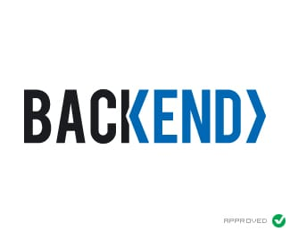
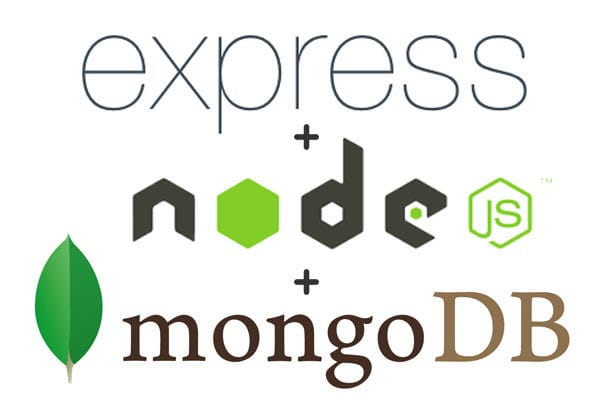

What is Full Stack Development and why is it important to learn?
Full Stack Development is a software profession/stream where a developer deals with both the Frontend (client-side) and Backend (server-side) of a tech product. A Full Stack Developer is proficient in several technologies that help in developing a robust tech product, and thus play a major role in making decisions for the company. It is one of the high-demand jobs in the software industry.
Learning full-stack development will help you master a wide set of skills ranging from HTML, CSS, JavaScript , back-end languages (Python, PHP, Ruby), database storage, HTTP, REST, and NPM, along with a good set of Agile project management and soft skills.
In order to become a Full-stack Development expert, you are required to fulfill the following skills sets:
- Front-end Developer
- Back-end Development
- Database Handling
- Web Servers and APIs Exposure
- Basic Designing Fundamentals
On the Front end A front-end developer creates websites and applications using web languages such as HTML, CSS, and JavaScript that allow users to access and interact with the site or app. When you visit a website, the design elements you see were created by a front-end developer. full stack developers are experienced in HTML, CSS, and JavaScript, which are fundamental technologies for building the user interface and handling user interactions. They are knowledgeable about front-end frameworks like React, Angular, or Vue.js, which enable them to develop dynamic and responsive web interfaces.

On the Back end ,Back-end developers are the experts who build and maintain the mechanisms that process data and perform actions on websites. Unlike front-end developers, who control everything you can see on a website, back-end developers are involved in data storage, security, and other server-side functions that you cannot see. Full stack developers work with server-side programming languages such as JavaScript (Node.js), Python, Ruby, or Java. They are proficient in handling databases like MySQL, PostgreSQL, or MongoDB, and have knowledge of server frameworks such as Express.js, Django, Ruby on Rails, or Spring Boot.

It's important for full stack developers to have a good understanding of Database concepts, query languages, and database management systems. This knowledge allows them to create robust and scalable applications that efficiently store and retrieve data, ensuring the overall functionality and performance of the web application. Overall, a full stack developer is a versatile professional who can handle multiple aspects of web development, enabling them to create end-to-end solutions for web applications. They have a broad skill set and can adapt to different technologies and frameworks as required by the project.
What languages do Full Stack Developer use:
Full stack developers are free to use any set of languages that are compatible with each other and the overall
application framework. JavaScript is a popular language often used by full-stack developers as it’s one of the very
few languages that can be used both on the front end and back end. Companies will most likely hire a full stack developer
for smaller or medium-size projects. Some popular languages are:
Front end: HTML,
CSS, JavaScript
Back end: Python, Java,
R, Ruby,
Node.js,PHP.
Popular Resources:
Below, we’ve listed a few of the most-loved coding course platforms. Each of the linked sites provides easy-to-follow and relatively inexpensive front end, back end, and full stack development tutorials.
- Coursera:
Coursera offers an enormous menu of full stack web development courses ranked by learner star ratings. Many courses focus on specialties such as multi-platform app development, responsive website design, Android/iOS development, and object-oriented programming.
- Udemy:
Nearly 300,000 registered learners are currently learning full stack development on Udemy. Considered one of the most trusted self-led platforms, Udemy offers both technology-specific courses and theoretical materials for those that want a deeper dive.
- FreeCodeCamp:
Want to avoid paying tuition for the fundamentals? FreeCodeCamp provides an easy way to build projects, earn certifications, and learn to code from home. The site covers topics ranging from data visualization to web design, data structures, and coding interview prep.